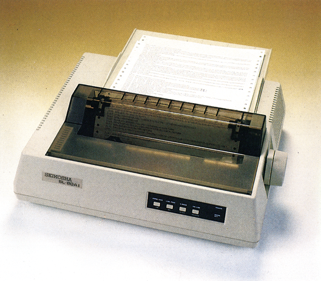
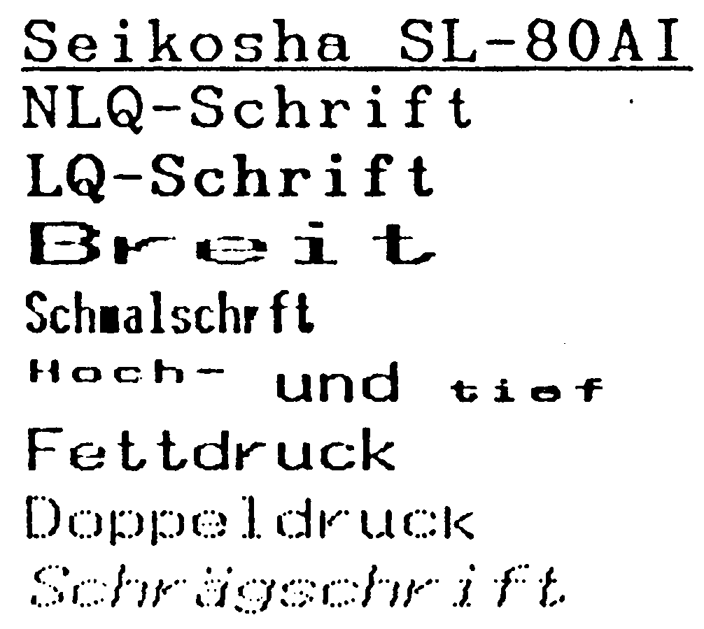
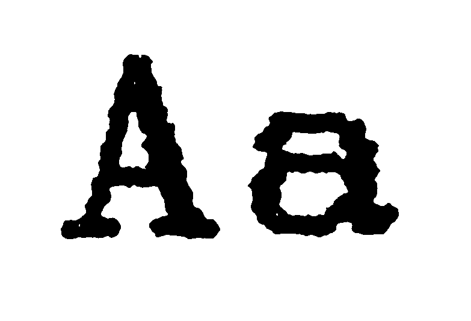

Günstige Nadeln
Wo 24 Nadeln ein Zeichen zusammensetzen, darf man auf die Schriftqualität gespannt sein. Trotzdem ist der SL-80AI ein preiswerter Drucker mit vielen interessanten Funktionen und Schriften.
Eine der großen Fragen, die zur Zeit die Druckerbranche bewegt und schon fast die Ausmaße eines Glaubenskrieges angenommen hat, ist die, wieviele Nadeln ein Matrixdrucker wohl haben sollte. Bekanntlich haben die meisten Matrixdrucker neun Nadeln. Will man aber eine noch schönere Schrift haben, so kommt man nicht darum herum, mehr Nadeln einzusetzen. Manche Hersteller setzen dabei auf 18 Nadeln, manche auf 24 Nadeln, wobei die Geräte mit 24 Nadeln favorisiert werden, da es Gerüchte gibt, daß IBM einen Drucker mit 24 Nadeln herausbringen möchte. Zwei Dinge spielen dabei eine Rolle. Zum einen sind Drucker mit 24 Nadeln tatsächlich in der Lage, eine wesentlich schönere und geschlossenere Schrift als 9-Nadel-Drucker zu erstellen. Zum anderen sind solche Drucker bislang noch recht teuer. Da kommt es wie eine Überraschung, daß der SL-80AI von Seikosha (Bild 1), dessen erste Preisangaben (August 1986) über 1698 Mark lauteten, nun für einen Preis von 1298 Mark im Markt eingeführt wird.

Alles drin, alles dran
Trotz seines niedrigen Preises macht der SL-80AI nicht den Eindruck eines Billigproduktes. Der Druckkopf wandert auf zwei soliden Stahlschienen, der Knopf zum Eindrehen des Papiers und das gesamte Gehäuse machen einen sehr vertrauenserweckenden Eindruck. Auf der Gehäuserückseite befindet sich die Centronics-Schnittstelle und zwei DIL-Schalterreihen. Wie bei Seikosha üblich, wird der halbautomatische Einzelblatteinzug durch einen, neben dem Papierdrehknopf angebrachten, zweiten Hebel aktiviert. Zum korrekten Einführen des Einzelblatt-Papiers wird einfach der Papierseparator hochgeklappt und dient nun als Stütze. Gleichzeitig sollte man den, nur aufgesetzten, Zugtraktor abnehmen, damit ein einwandfreier Transport des Einzelblatt-Papiers gewährleistet ist. Will man dann wieder Endlos-Papier verwenden, so genügt es den Traktor aufzusetzen und das Papier einzufädeln. An Stelle des Traktors kann man aber auch einen automatischen Einzelblatteinzug montieren und so problemlos Serienbriefe auf Sondervordrucken erstellen. Eine Besonderheit ist auch das Tastaturfeld des SL-80AI, über das nicht nur die Standardfunktionen, sondern auch der rechte und linke Rand eingestellt werden, sowie zwischen der LQ- und der Draft-Druckqualität umgeschaltet wird.
Innere Qualitäten
Aber auch die inneren Qualitäten des SL-80AI können sich sehen lassen. So verfügt er nicht nur über die Befehle nach dem ESC/P-Standard (Epson LQ 1500 kompatibel) sondern auch über Befehle und Zeichensatz eines IBM-Modus (Tabelle). Damit paßt der SL-80AI nicht nur ausgezeichnet zum C 64, sondern auch hervorragend zum C 128, zum Amiga und natürlich auch zu IBM-Kompatiblen. Wer den SL-80AI an den C 64 anschließen möchte, sollte in jedem Fall ein Hardware-Interface verwenden, denn die Signalstärke, die vom SL-80AI verlangt wird, kann nicht von allen Software-Schnittstellen bereitgestellt werden. Wir haben in unserem Test ein Wiesemann Typ 92000/G problemlos verwendet. Besonders interessant ist bei einem Drucker mit 24 Nadeln natürlich die Schriftqualität, die ihn ja von anderen Druckern mit weniger Nadeln unterscheiden soll. Wenn man sich den Probeausdruck (Bild 2 und 3) ansieht, so wird klar, was dieser Drucker mit so vielen Nadeln macht. Es sind keine einzelnen Punkte mehr erkennbar sondern nur noch ganz winzige Unebenheiten beim Übergang von einer Nadel zu anderen. Man kann also mit Recht von einer LQ-Schrift, das heißt Schönschrift, sprechen, zumal der SL-80AI diese Schrift erzeugt, ohne zweimal über eine Zeile drucken zu müssen. Entsprechend positiv fällt somit auch unser Geschwindigkeitstest aus. In der Draft-Schrift schafft der SL-80AI gute 128 Zeichen pro Sekunde (angegeben 150 Zeichen pro Sekunde) und in der LQ-Schrift sogar hervorragende 44 Zeichen pro Sekunde (angegeben 54 Zeichen pro Sekunde).


Für den Probetext benötigte der SL-80AI den eher durchschnittlichen Wert von 3:30 Minuten, was vor allem auf den relativ langsamen Papiervorschub zurückzuführen ist.
Natürlich hat uns auch interessiert, wie sich so ein 24-Nadel-Drucker bei der Wiedergabe von Grafik verhält. Da aber alle Punktdichten von 480 bis 1920 Punkten pro Zeile mit neun Nadeln emuliert werden, lassen sich wie gewohnt Hardcopies erstellen. Daneben verfügt der SL-80AI aber noch über einige spezielle Grafikbefehle für 24 Nadeln, für die gängige Hardcopy-Programme allerdings erst umprogrammiert werden müssen.
Empfehlenswert
Vergleicht man Preis und Leistung des SL-80AI miteinander, so kann man nur von einer Sensation sprechen. Die Schriftqualität, die mit 24 Nadeln erzeugt wird, ist der eines 9-Nadel-Druckers mit NLQ-Schrift eindeutig überlegen. Trotzdem kostet der SL-80AI mit seinem Preis von 1298 Mark nicht mehr als ein guter 9-Nadel-Drucker. Auch die Fähigkeiten, die der SL-80AI im Praxisbetrieb zusammen mit verschiedenen Grafik- und Textprogrammen gezeigt hat, ist bemerkenswert. Einzig der Zugtraktor war Anlaß zur Kritik, denn durch ihn geht immer ein Blatt verloren, wenn Endlospapier genau justiert werden soll.
Leider muß der Traktor auch jedesmal abgenommen werden, wenn Einzelpapier verarbeitet wird. Hier wäre eine Konstruktion mit Schubtraktor sinnvoller gewesen. Trotzdem bleibt der SL-80AI ein rundherum gelungener Drucker, dessen Schriftbild in dieser Preisklasse von keinem anderen Drucker erreicht wird. Damit wurde erstmals die Preisgrenze von 1500 Mark für 24-Nadel-Drucker unterschritten. Es bleibt abzuwarten und zu hoffen, wie andere Hersteller auf dieses Signal reagieren werden.
(aw)Info: Seikosha (Europe), Brahmfelder Chaussee 105, 2000 Hamburg 71
| Name des Druckers: | Seikosha SL-80AI | Empfohlener Preis: Farbband: |
1298 Mark 24,50 Mark |
|---|---|---|---|
| Abmessungen (BxHxT): | 400 x 140 x 325 mm | Gewicht: | 7,0 kg |
| Papierformate: | Einzel, max. 255 mm breit Endlos, max. 255 mm breit |
Durchschläge: | 2 |
| Zeichen/Zeile: | bis zu 160 | Selbsttest: | Ja |
| Pufferspeicher: | 16 KByte | Rückwärtstransp.: | Nein |
| Geschwindigkeit | Probetext: | 3:30 Minuten | |
| Normal angegeben: | 150 Zeichen/Minute | Praxistest: | 128 Zeichen/Sek. |
| NLQ angeben: | 54 Zeichen/Sekunde | NLQ-Praxistest: | 44 Zeichen/Sekunde |
| Grafikmodi: | 480 — 1920 Punkte pro Zeile, 9-Nadel + 24 Nadel-Grafik | ||
| Ladbarer Zeichensatz: | Ja | Unterstreichen: | Ja |
| Hexdump: | Ja | Autom. Einzelblatt: | Halbautomatisch |
| Funktionstasten: | LF, FF, ON/OFF-Line mit Doppelfunktion | ||
| Ausstattung: | Handbuch (deutsch) Papierseparator, Traktor | ||
| Schriftarten: | Doppelt, Fett, Revers, Elite, Proportional, Unterstrichen Schrägschrift, hoch/tiefgestellt, NLQ und LQ-Schrift | ||
| Sonderzubehör: | Automat. Einzelblatteinzug | ||